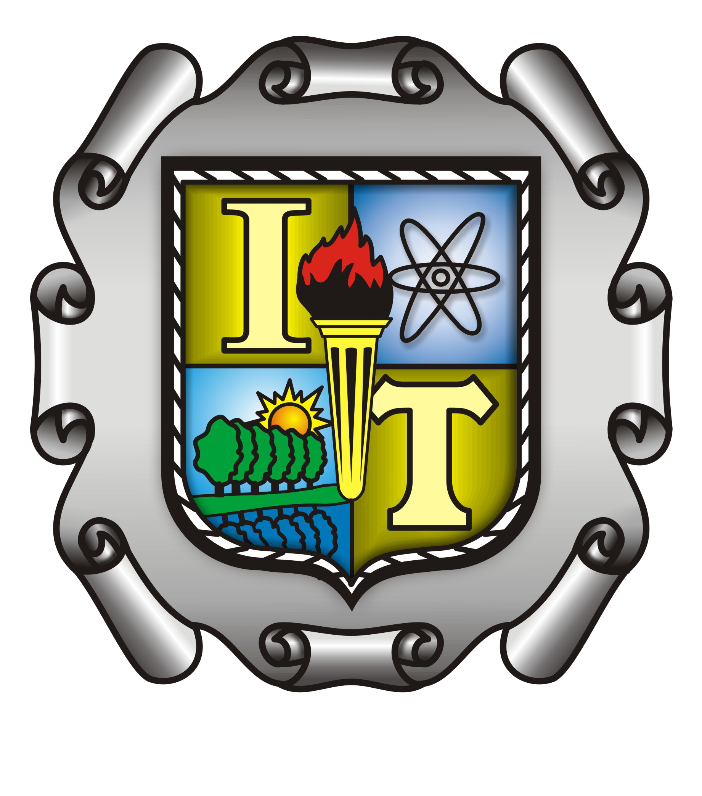
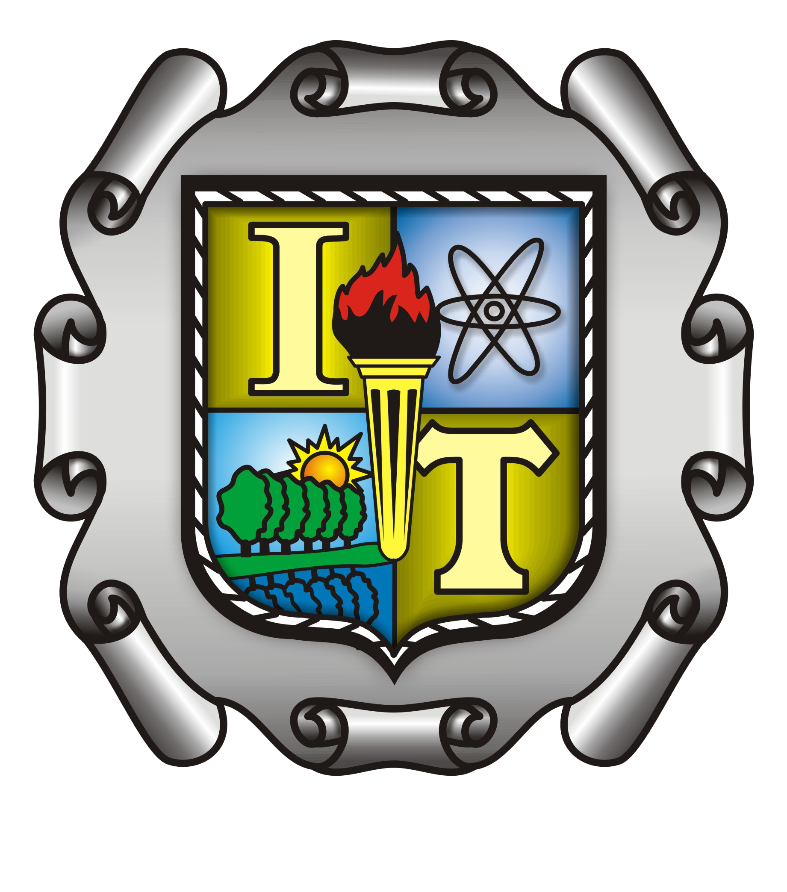

El laboratorio de mecanica está ubicado en el campus miravalle del tecnológico, es utilizado por estudiantes de distintas ingenierias, principalmente los estudiantes de ingenieria mecanica,
este laboratorio cuenta con distintas areas, una caseta para control del acceso al laboratorio, al lado izquierdo de la entrada se encuentra el area administrativa y algunos cubiculos de profesores y encargados del laboratorio,
en la planta alta hay algunos cubiculos para alumnos además en el centro del laboratorio y al fondo todo tipo de máquinaria y herramientas utilizadas para las prácticas.
 
